図解：写実主義
写実主義の成立
- 1830年代〜
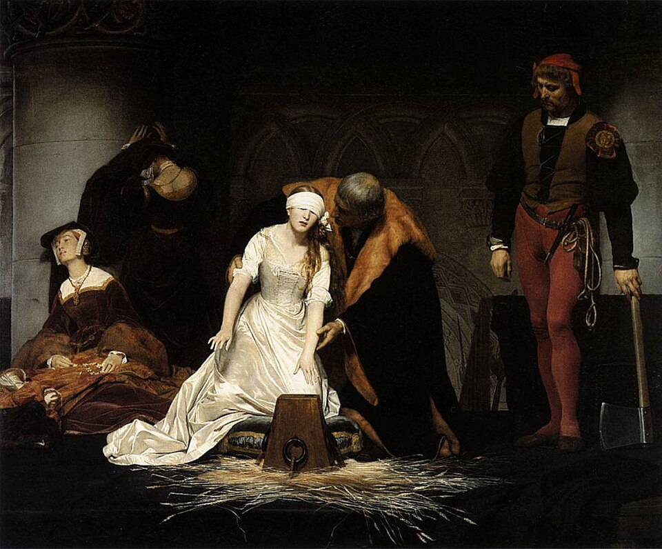
七月王政のサロン折衷派・オリエンタリズム
裕福な市民に好まれる - 1848
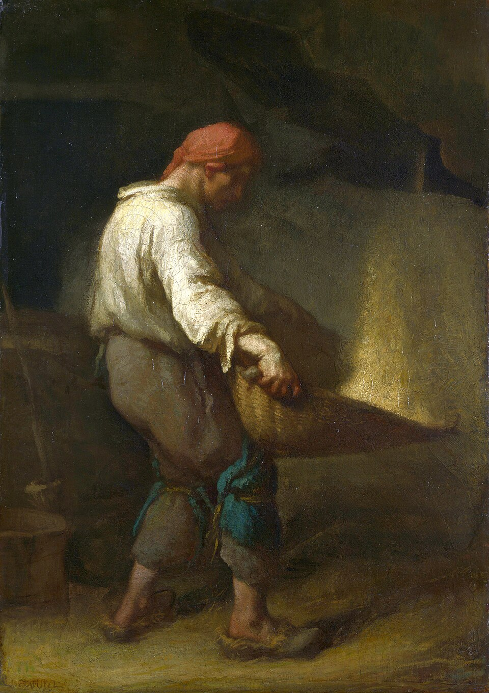
二月革命と第二共和政サロンを審査なしで開催
《箕をふるう人》を政府が購入 - 1850
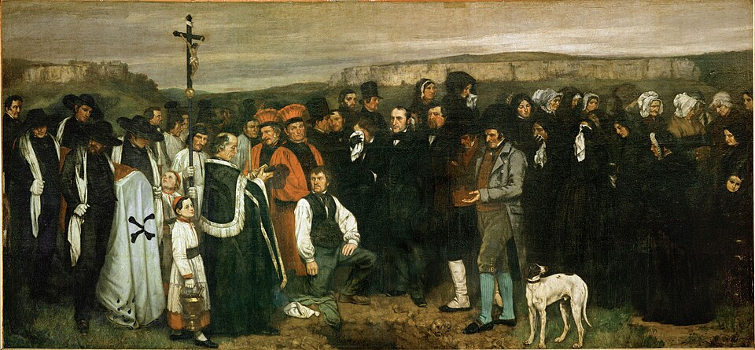
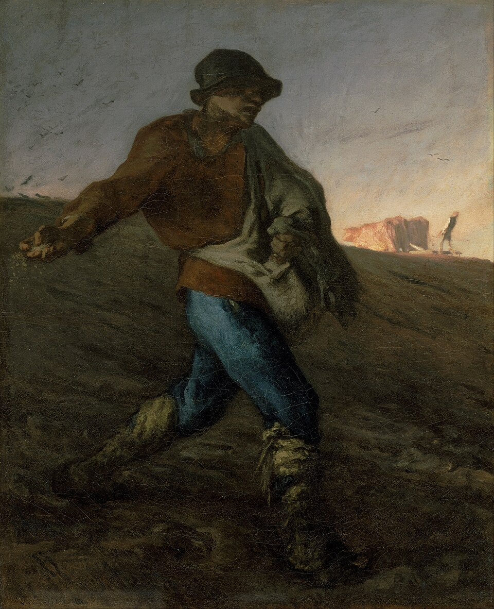
クールベとミレーが物議《オルナンの埋葬》《種まく人》
農民画が危険視される - 1855

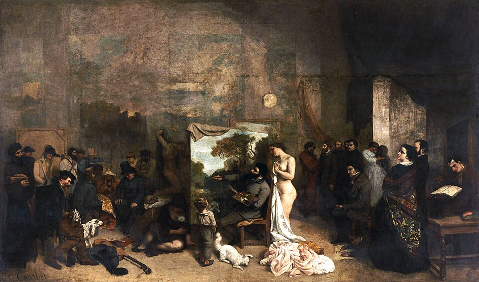
クールベの個展万博で二作を拒否され
「レアリスム宣言」を配布
従来の絵画と何が違うか
社会のありのまま描き方理想化・空想見たまま淡々と大画面歴史的な重要場面地元の普通の葬儀
《オルナンの埋葬》寓意宗教・神話から取る作者自身が作る
《画家のアトリエ》
図版の出典
- 《レディ・ジェーン・グレイの処刑》ポール・ドラローシュ：出典（Public domain（PD-Art））
- 《箕をふるう人》ジャン＝フランソワ・ミレー：出典（Public domain（PD-Art））
- 《オルナンの埋葬》ギュスターヴ・クールベ：出典（Public domain（PD-Art））
- 《種まく人》ジャン＝フランソワ・ミレー：出典（Public domain（PD-Art））
- ギュスターヴ・クールベの写真、ナダール工房、1860年代、フランス国立図書館：出典（Public domain）
- 《画家のアトリエ――私の芸術的・道徳的生活の7年間を要約する現実的寓意》ギュスターヴ・クールベ：出典（Public domain / PD-Art）
重要人物
写実主義の画家
- ギュスターヴ・クールベ画家見たままを描く。1855年に個展と宣言
 ジャン＝フランソワ・ミレー画家農民の労働に美を見いだす。《落穂拾い》
ジャン＝フランソワ・ミレー画家農民の労働に美を見いだす。《落穂拾い》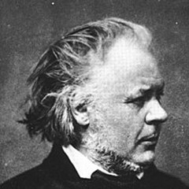
オノレ・ドーミエ風刺画家王政や貧富の差を明らかな政治性で描く
交友と支援
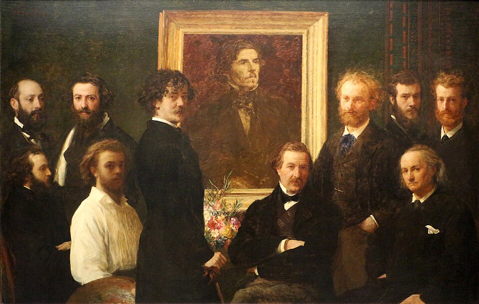
ボードレール詩人・評論家現代生活の美を大画面で表すことを課題とした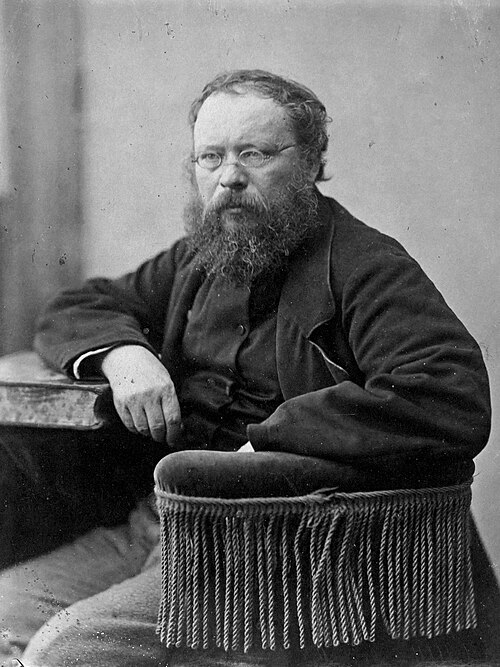
プルードン社会主義者二月革命の頃にクールベと交友を結ぶ- アルフレッド・サンシエ支援者ミレーが農民を描き続ける意思を手紙で伝えた
時代を動かした人

七月王政期の画家

1860年代の新しい画家
肖像・図版の出典
- ギュスターヴ・クールベの写真、ナダール工房、1860年代、フランス国立図書館：出典（Public domain）
- ジャン＝フランソワ・ミレーの写真、ナダール撮影、1856～1858年頃、メトロポリタン美術館：出典（CC0）
- オノレ・ドーミエの写真、ナダール撮影：出典（Public domain）
- 《ドラクロワへのオマージュ》アンリ・ファンタン＝ラトゥール：出典（CC BY 3.0）
- ピエール＝ジョゼフ・プルードンの写真、ナダール撮影、1862年頃、フランス国立図書館：出典（Public domain）
- 《ルイ＝フィリップの肖像》フランツ・クサーヴァー・ヴィンターハルター、1839年、ヴェルサイユ宮殿：出典（Public domain）
- ナポレオン3世の写真（名刺判）、ディスデリ撮影、1859年：出典（Public domain）
- ウジェーヌ・ドラクロワの写真、ナダール撮影、1858年頃：出典（Public domain）
写実主義とは
写実的に描くこと、現実を描くこと
動画 1:49～19世紀半ばのフランスに現れたレアリスム、すなわち写実主義は、物議を醸しながら、後の印象主義や象徴主義に大きく影響しました。現実らしく描くこと自体は、すでにルネサンスから追求されていました。幾何学や解剖学などの理論と教育によって、人体や自然を忠実に再現することもできるようになっています。しかし、現実らしい描写と、現実そのものを描くことは同じではありません。
歴史画を頂点とする絵画の序列では、作者や依頼者の空想が主題に入り込みました。肖像画は描かれる人を実際以上に持ち上げ、風俗画や静物画には作品の地位を高める寓意を込め、風景画も理想化した空想の世界を表しました。写実主義は、そのような芸術のあり方を問い直し、自然の姿を忠実に再現しようとします。新古典主義の厳めしい理想や、ロマン主義の劇的な世界も否定しました。背景には、市民革命や産業革命による社会構造の変化がありました。
 画像を拡大 ＋
画像を拡大 ＋
《ルイ13世の誓願》
- 作者
- ジャン＝オーギュスト＝ドミニク・アングル
- 制作時期
- 1824年
- 所在地・所蔵
- モントーバン大聖堂
- 素材・形式
- 油彩画
出典・画像について
七月王政と社会の変化
七月革命と市民階級
動画 3:26～1815年、ナポレオンの失脚でブルボン朝が王政復古を果たしました。しかし、ルイ18世と後継のシャルル10世は、旧貴族や聖職者を優遇しました。怒ったパリの民衆は、裕福な市民階級の主導で蜂起し、1830年の七月革命で王朝を倒します。ドラクロワの《民衆を導く自由の女神》は、この革命を主題としました。
 画像を拡大 ＋
画像を拡大 ＋
《民衆を導く自由の女神》
- 作者
- ウジェーヌ・ドラクロワ
- 制作時期
- 1830年
- 所在地・所蔵
- ルーヴル美術館（RF 129）
- 素材・形式
- 油彩画
出典・画像について
続いてオルレアン家のルイ＝フィリップが即位します。市民の政治参加や権利拡大に理解を示し、旧貴族や聖職者の影響力は低下しました。また、国内の不満を外へ向けるため北アフリカの植民地化が進み、国外の文化も入ってきました。こうした変化は、美術にも及びます。
折衷派とオリエンタリズム
動画 4:28～七月王政期の美術では、まずポール・ドラローシュら折衷派が登場します。それまでの美術界では、正統派の新古典主義と新興のロマン主義が対立していました。前者は素描を重視した重厚な画風、後者は荒々しいタッチと豊かな色彩を特徴とします。1830年以降のサロンでは、両者を組み合わせる絵画が登場します。新古典主義の素描を維持しながら、ロマン主義的な色彩や劇的な演出を加える作品が、革命後に台頭した裕福な市民に受け入れられました。

《レディ・ジェーン・グレイの処刑》
- 作者
- ポール・ドラローシュ
- 制作時期
- 1833年
- 所在地・所蔵
- ナショナル・ギャラリー、ロンドン（NG1909）
- 素材・形式
- 油彩画
出典・画像について
もう一つの新しい流れが、オリエンタリズムです。ナポレオンのエジプト遠征後、ヨーロッパでは東方への関心が深まりました。失脚後もフランス政府は使節団をモロッコやアルジェリアへ派遣し、芸術家も見聞を作品に表しました。東方の人々の色鮮やかな衣装は、ロマン主義の傾向にも合いました。理解するのに古典的教養を必ずしも必要とせず、折衷派と同じく、裕福な市民という新しい買い手を得ました。

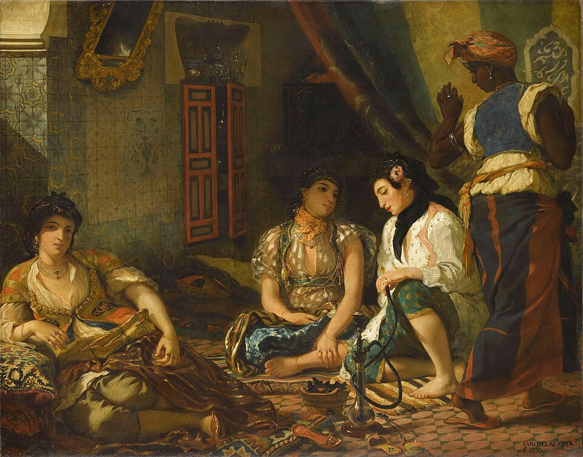
画像を拡大 ＋《アルジェの女たち》
- 作者
- ウジェーヌ・ドラクロワ
- 制作時期
- 1834年
- 所在地・所蔵
- ルーヴル美術館（INV 3824）
- 素材・形式
- 油彩画
出典・画像について
産業化と二月革命
動画 5:44～市民文化を発展させた七月王政にも、問題がありました。1830年代、フランスにも産業革命の波が押し寄せます。1832年にはリヨン近郊、その五年後にはパリ近郊で鉄道が開通しました。画家がバルビゾンへ気軽に行けるようになったことも、その恩恵です。しかし、工場の発展に伴って貧しい農民が都市へ流入し、労働者となりました。
人口増に整備が追い付かないパリでは、下層労働者の住環境は劣悪で、コレラも流行しました。法律の整備も不十分で、資本家は低賃金で一日十数時間も働かせました。環境を改善するため政治に参加したくても、選挙権は高額納税者に限られていました。七月王政下で拡大した市民の権利は、あくまで資本家ら富裕層のものだったのです。
不平等を是正しようとして、労働者の間に社会主義思想が広がります。フランスのサン＝シモンは、それに先立つ時代に、資本家と労働者が協力して近代的な都市を開発するよう説きました。生前はあまり評価されませんでしたが、死後に多くの支持者を得ました。1840年代にヨーロッパが寒冷期に襲われると、貧困層の不満は爆発しました。1848年、政府が下層市民の選挙権拡大に応じなかったことから暴動となり、市庁舎や政府機関の占拠に至ります。二月革命によってルイ＝フィリップは王位を追われ、七月王政が崩壊しました。この混乱のなかで、新たな美術が生まれました。
第二共和政と農民画
第二共和政とサロンの改革
動画 8:15～1848年、王政が終わり、第二共和政が成立しました。臨時政府は、貧しい労働者へ仕事を与える国立作業場を設け、21歳以上の全男性に選挙権を認め、パリでは労働時間を一日10時間までに制限するなど、改革を進めました。
改革は美術にも及び、1848年のサロンは審査なしで全作品を入選としました。作品が多すぎたため翌年には審査を再開しましたが、審査員をアカデミー会員に限らない措置も取られます。ルソーも長い落選から抜け出し、バルビゾン派は、田舎へのノスタルジーを抱く支援者に受け入れられました。風景だけでなく、農民を主題とする絵にも一定の評価が与えられます。革命の中心となった下層の労働者へ光を当てるものだったからです。ジャン＝フランソワ・ミレーの《箕をふるう人》は政府に購入され、この成功が農民を描く画業のきっかけとなりました。

《箕をふるう人》
- 作者
- ジャン＝フランソワ・ミレー
- 制作時期
- 1847～1848年頃
- 所在地・所蔵
- ナショナル・ギャラリー、ロンドン（NG6447）
- 素材・形式
- 油彩画
出典・画像について
保守化とルイ＝ナポレオン
動画 9:33～同年4月の選挙では、社会主義の候補が多くの議席を得ると予想されましたが、880議席のうち100にも届かず、保守的な貴族や地主が多数を占めました。理由はさまざまですが、平等の名の下に自分の土地を奪われるのではないかと、人々が恐れたためともいわれます。不満を抱いた人々による六月蜂起も鎮圧され、フランスは社会主義の道には進みませんでした。
その年に行われた大統領選挙で、国の方向を大きく変えるルイ＝ナポレオンが選ばれます。ナポレオン・ボナパルトの甥で、伯父の失脚後は亡命生活を送り、七月王政の崩壊後に帰国して74パーセントの票を得ました。王政に嫌気が差した国民の間で、王政に反発して国を強くした伯父の再評価が進んでいたことが、支持の一因でした。
本人の思想にも期待がありました。1844年の著書『貧困の根絶』で、税金によって貧しい農民や労働者を救済する策を説いており、下層労働者も支持しました。就任後は反対派の言論を規制する一方、労働者住宅を建てるなど福祉に力を入れます。こうした時代の1850年のサロンに、物議を醸す作品が登場しました。
農民画が危険視された理由
動画 11:36～1850年のサロンで特に注目されたのが、クールベの《オルナンの埋葬》とミレーの《種まく人》です。前者は庶民の普通の葬儀を大画面に堂々と描き、後者は労働する姿を英雄的に表しました。1848年には農民画も評価されていましたが、二年間で状況は変わり、下層市民へ光を当てる絵は、社会主義を勢い付けるのではないかと危険視されました。保守層が議席の大半を占め、マルクスの登場によって近隣諸国にも緊張があり、新たな革命への警戒があったのです。マルクスは『資本論』や『共産党宣言』で知られる思想家です。

《オルナンの埋葬》
- 作者
- ギュスターヴ・クールベ
- 制作時期
- 1849～1850年
- 所在地・所蔵
- オルセー美術館（RF 325）
- 素材・形式
- 油彩画
出典・画像について

《種まく人》
- 作者
- ジャン＝フランソワ・ミレー
- 制作時期
- 1850年
- 所在地・所蔵
- ボストン美術館（17.1485）
- 素材・形式
- 油彩画
出典・画像について
クールベ、ミレー、ドーミエ
見たままを描いたクールベ
動画 12:52～ギュスターヴ・クールベは、スイスとの国境に近いフランスの田舎町オルナンで、地主の息子として生まれました。パリに住んでからも故郷を愛し、その地の作品を数多く描きました。1848年には社会主義に賛同して二月革命に参加し、その頃、『悪の華』で知られる詩人・美術評論家ボードレールや、社会主義者プルードンと交友を結びました。
ただし、社会主義に基づいて絵を描いたかどうかは、一概にはいえません。1920年代のソビエト連邦で台頭する社会主義リアリズムには、労働者が理解できるよう、指導者や労働者を写実的かつ壮大に描く宣伝的な要素があります。クールベにそのような要素は見られません。また、社会の厳しい現実に感情を載せ、いっそう悲惨に見せる態度とも違い、見たものを淡々と描きました。
《石割人夫》では、破れた服の老人と少年が黙々と働きます。表情を知ることはできず、それがかえって作り物ではない現実味を帯びさせました。見たまま描く姿勢が、社会の現実をさらしたのです。制作の背景には、政治以上に、美術界へ挑む要素が大きかったと考えられます。

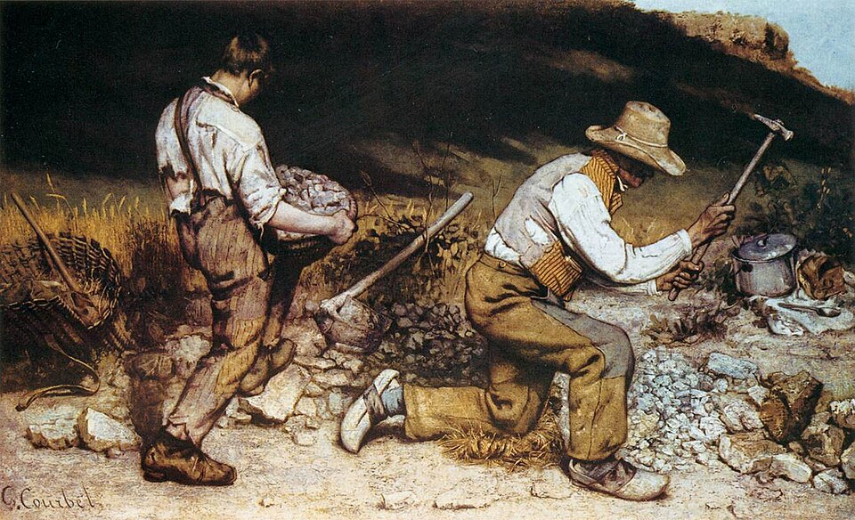
画像を拡大 ＋《石割人夫》
- 作者
- ギュスターヴ・クールベ
- 制作時期
- 1849年
- 所在地・所蔵
- 旧ドレスデン絵画館所蔵、1945年戦災で消失
- 素材・形式
- 油彩画
出典・画像について
1945年に消失した原画の記録画像です。現存する習作とは別の作品です。動画表示1848年に対し、作品情報の1849年を記載。
画像出典：Gustave Courbet
Public domain（PD-Art）
作品情報：作品・画像・利用条件
クールベの主題の選択には、ボードレールの影響が大きかったともいわれます。彼は、現代生活固有の美を見いだし、歴史画に匹敵する大画面で表すことを美術の課題としました。《オルナンの埋葬》も、おそらくそれに賛同した作品でしょう。縦約315センチ、横668センチの画面に、地元の普通の葬儀が描かれています。観客には知らない人々の日常にすぎませんが、従来は宗教・神話や歴史的重要場面だけに許された大画面を、あえて市民で埋めました。
中世からバロックに流行した死の舞踏やヴァニタスには、地位や富があっても死は平等だという認識がありました。クールベの絵は、生きていても人は等しいと訴えているともいえます。政治的風刺を強調しない描写ですが、政治的思想が全くないわけでもありませんでした。1850年のサロンでレアリストと評されると、その呼称を戦略的に受け入れ、活動していきました。
農民に美を見いだしたミレー
動画 15:56～政治的思想によらず農民を描いたのがミレーです。もとは歴史画家を目指しましたが大成せず、生活のため裸婦を数多く描き、売れ行きは好調でした。しかし、作品を見た人が、裸の絵ばかり描くミレーのものだと話すのを聞いて、世間の評価に衝撃を受けます。生活が苦しくなっても裸婦は描かないと誓ったとされます。同時にサロンへ出した歴史画は評価されませんでしたが、《箕をふるう人》が認められ、農民画に自分の進む道を見いだしました。初めから望んだ様式転換ではなかったのです。

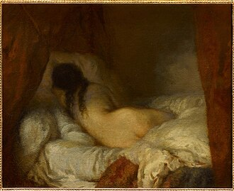
画像を拡大 ＋《横たわる裸婦》
- 作者
- ジャン＝フランソワ・ミレー
- 制作時期
- 1844～1845年
- 所在地・所蔵
- オルセー美術館（RF 2409）
- 素材・形式
- 油彩画
出典・画像について
サロンで成功した翌1849年、コレラの流行もあって、家族とバルビゾンへ移ります。そこで生涯の友となるテオドール・ルソーと出会い、大きな影響を受けました。農民の労働を何より尊く感じ、《種まく人》には、その姿をたくましく描きます。農業を営んだ父を重ねたともいわれ、政治思想のためでなく、そこに美を見いだしていました。
種まく人の主題には、聖書の「種まく人のたとえ」も重ねられています。北方ルネサンスのブリューゲルも扱った題材で、単なる農民画でなく宗教的意味が込められました。本人に政治的意図がなくても、当時の社会情勢のなかでは、鑑賞者が自分の都合で解釈し、利用することがありました。

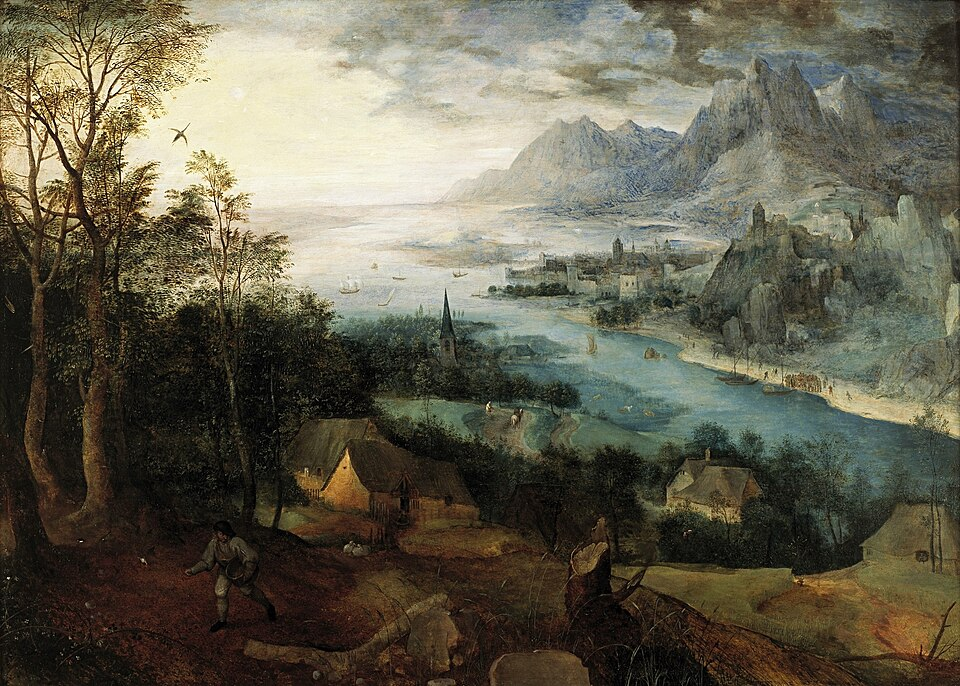
画像を拡大 ＋《種まく人のたとえのある風景》
- 作者
- ピーテル・ブリューゲル（父）
- 制作時期
- 1557年
- 所在地・所蔵
- ティムケン美術館、サンディエゴ（1957:002）
- 素材・形式
- 油彩画
出典・画像について
政治を風刺したドーミエ
動画 17:58～クールベやミレーより少し早く、風刺画家として活動したのがオノレ・ドーミエです。彼は、明らかな政治的要素を作品に載せました。七月王政期の作品では、玉座のルイ＝フィリップが富裕層からの貢ぎ物を口に入れ、代わりにメダルや勲章を排泄しています。富裕層と結び付く王政を、痛烈に非難したものでした。

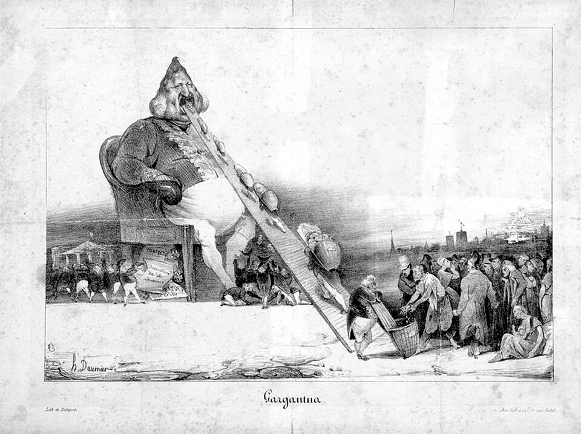
画像を拡大 ＋《ガルガンチュア》
- 作者
- オノレ・ドーミエ
- 制作時期
- 1831年
- 所在地・所蔵
- 掲載画像の刷の所蔵先未確定
- 素材・形式
- リトグラフ
出典・画像について
版画の図柄を確認していますが、動画と同じ刷り個体か、掲載した刷りの所蔵先までは確定していません。
画像出典：Honoré Daumier
Public domain / PD-Art
作品情報：作品・画像・利用条件
二月革命後、ドーミエは新しい共和国の寓意を描くコンクールへ参加します。旗を持つ力強い女性は、兄弟愛を備えたフランス共和国を意味し、国民を表す乳児を支える寓意です。クールベやミレーほどサロンへ作品を出しませんでしたが、社会風刺は芸術家仲間や風刺新聞社に好評でした。《待合室》では、列車を待つ貧相な服装の人々を暗く描き、社会的なメッセージを感じさせています。

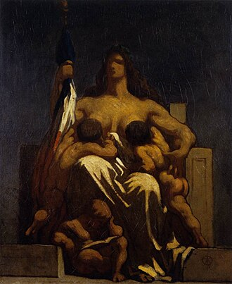
画像を拡大 ＋《共和国》
- 作者
- オノレ・ドーミエ
- 制作時期
- 1848年
- 所在地・所蔵
- オルセー美術館（RF 1644）
- 素材・形式
- 油彩画
出典・画像について

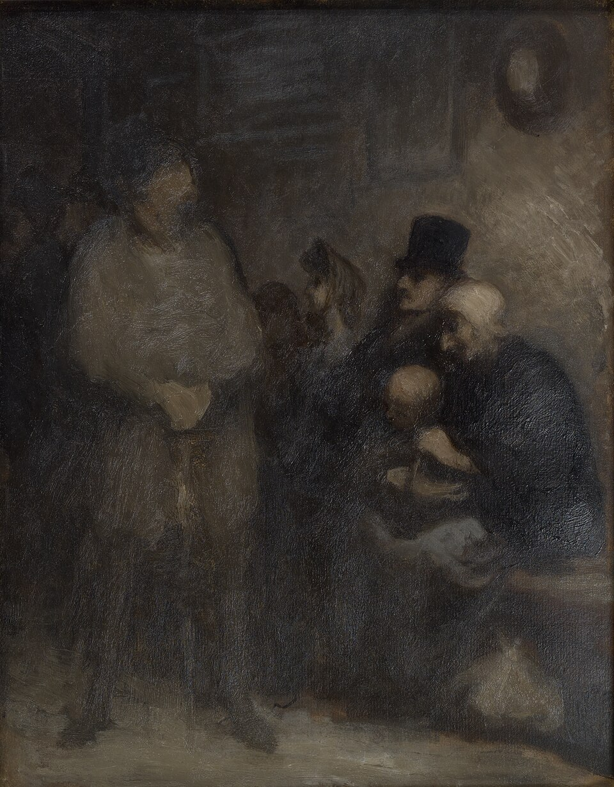
画像を拡大 ＋《待合室》
- 作者
- オノレ・ドーミエ
- 制作時期
- 1850～1853年
- 所在地・所蔵
- バッファローAKG美術館（1964:12）
- 素材・形式
- 油彩・紙
出典・画像について
同じ写実主義でも、三人の目的や信念は共通ではなく、技法上の写実性が特に重視されたわけでもありませんでした。共通するのは、社会のありのままを描く点です。政治的意図の有無にかかわらず、国民の大多数を占める農民や労働者を主題とすると、貧富の差が浮かび上がりました。しかし、第二帝政が始まると、彼らは逆風に立たされます。
ナポレオン3世の時代
第二帝政と美術の規制
動画 19:50～ルイ＝ナポレオンには、四年の大統領任期の終わりが迫っていました。第二共和政憲法は再選を禁じていたため、どれほど支持されても退任しなければなりませんでした。1851年12月、彼はクーデターで議会を解散させ、敵対勢力を逮捕します。翌1852年11月、元首を皇帝とする国民投票で95パーセント以上の賛成を得て、ナポレオン3世の第二帝政が始まりました。「3世」と数えるのは、ボナパルトの失脚後に短期間皇帝とされた人物をナポレオン2世とするためです。
ナポレオン3世は、クリミア戦争の勝利やイタリア統一戦争への介入で、国外への影響力を高めました。同時に都市計画を重視し、セーヌ県知事ジョルジュ・オスマンに命じて、現在のパリの原型となる大改造を進めます。劣悪な衛生環境で病に苦しむ労働者を救う必要に加え、再び蜂起しても速やかに鎮圧できる、見通しのよい街路が求められたのです。
一方、その政治には権威主義的な側面があり、出版物や美術には表現の規制がかかりました。サロンでは、ナポレオン1世と自分を重ねるように審査へ介入し、新古典主義の画家を優先して入選させました。美術の新しい流れに反する方針でした。
《浴女たち》と《画家のアトリエ》
動画 21:35～1853年、クールベは《浴女たち》をサロンへ出品します。モデルのふくよかな身体を、そのまま描いた作品です。ナポレオン3世は醜いと一蹴し、絵に鞭を打ったとされます。しかし作者は、破れれば損害賠償を請求できたのに、と不敵に笑ったという逸話があります。

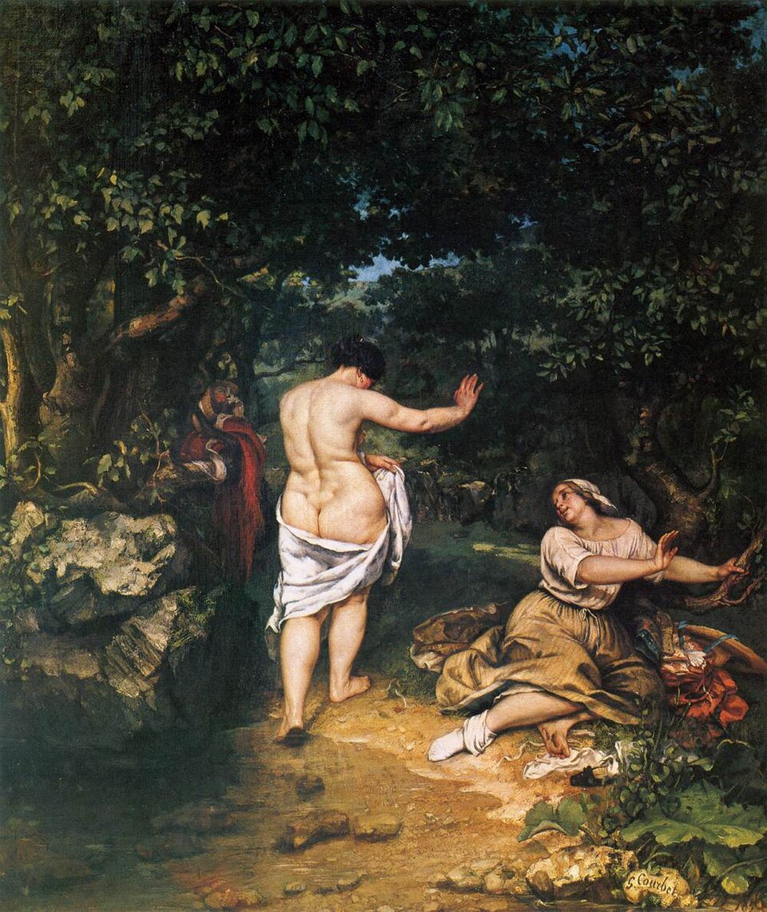
画像を拡大 ＋《浴女たち》
- 作者
- ギュスターヴ・クールベ
- 制作時期
- 1853年
- 所在地・所蔵
- ファーブル美術館、モンペリエ（868.1.19）
- 素材・形式
- 油彩画
出典・画像について
1855年のパリ万国博覧会ではサロンも同時に開かれ、アングルとドラクロワはそれぞれ一室で展示され、バルビゾン派も好評でした。クールベは《オルナンの埋葬》や新作《画家のアトリエ》などを出そうとしますが、その二作の展示を拒否されました。
《画家のアトリエ》は、従来の寓意画の決まりに反していました。宗教・神話・伝統的物語から意味を取るのではなく、作者自身が作った寓意を散りばめたのです。副題は「私の芸術的人生の七年間を要約する現実的寓意」。自分の人生に影響した人々や事物を描き、作者に聞かなければ意味が分からない表現も含みます。現代では普通の自己表現の先駆けでした。

《画家のアトリエ――私の芸術的・道徳的生活の7年間を要約する現実的寓意》
- 作者
- ギュスターヴ・クールベ
- 制作時期
- 1854～1855年
- 所在地・所蔵
- オルセー美術館（RF 2257）
- 素材・形式
- 油彩画
出典・画像について
個展とレアリスム宣言
動画 23:17～二作を拒否されたクールベは、博覧会の会場近くに小屋を建て、自らの作品を展示しました。1855年のこの行動は、近代の個展の先駆けとなります。来場者には「レアリスム宣言」と呼ばれる小冊子を配り、制作姿勢を明らかにしました。
宣言では、1830年代の人々にロマン派という名が押し付けられたように、自分にもレアリストという名が押し付けられたと述べます。呼称だけで事物を正しく見られるわけではなく、もし名称だけで理解できるなら作品自体が不要になるとして、名称の正確さを論じる代わりに、誤解を避けるためわずかな説明をします。学説や先入観にとらわれず古代と現代の芸術を追究し、どちらの模倣も、芸術のための芸術も望みませんでした。伝統を完全に知り抜き、自分の個性にある理性的で独立した感受性を引き出すことを目指し、「知は力なり」と考えたのです。時代の風俗・考え方・姿を、自分の審美眼に従って翻訳し、生きた芸術を作ることが目標でした。
宣言から分かるのは、クールベが過去の芸術を軽蔑してはいなかったことです。問題とされた行動も、従来の芸術を理解した上で自らの新しさを見いだしたもので、芸術家の制作姿勢の基盤を持っていたといえます。しかし個展の結果は芳しくなく、来場者は少なく、訪れても嘲笑して帰ったとされます。自信家の彼も、大きく落ち込んだようです。
《落穂拾い》への批判
動画 25:18～二年後の1857年、サロンの審査員は全員アカデミー会員となり、保守化が進みました。ミレーの代表作《落穂拾い》も、最下層の農民を主題とし、社会不安をあおるとして批判されます。しかしミレーの農民画への思いは強く、支援者アルフレッド・サンシエへ、社会主義者のレッテルを貼られても心を動かすのは人間の側面だと、農民を描き続ける意思を手紙で伝えました。歴史画へ戻るのでなく、自らの美に従ったのです。
落穂拾いは、収穫時に取り切れなかった穂を、貧しい農婦が拾ってよいとする慣習です。聖書には、刈り残した穂を貧しい者のために残す教えがあり、近代の一部の村にも残っていました。ミレーはバルビゾンでこの慣習に感動して描いたとされ、たくましく生きる農民の姿を表しました。

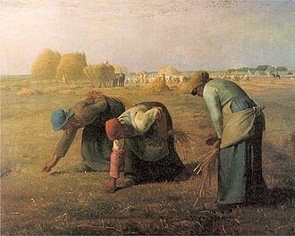
画像を拡大 ＋《落穂拾い》
- 作者
- ジャン＝フランソワ・ミレー
- 制作時期
- 1857年
- 所在地・所蔵
- オルセー美術館（RF 592）
- 素材・形式
- 油彩画
出典・画像について
同じ頃、別の画家も落穂拾いを描きましたが、そちらは問題視されませんでした。ミレーの絵は拾えた穂も人も少なく、いっそう悲壮な印象を与えました。こうした現代生活に美を見いだす点は、彼のよさでもありましたが、1850年代の作品は社会的背景もあってほとんど売れませんでした。ドーミエも風刺新聞への表現規制で仕事を失い、三人とも苦境に立ちました。

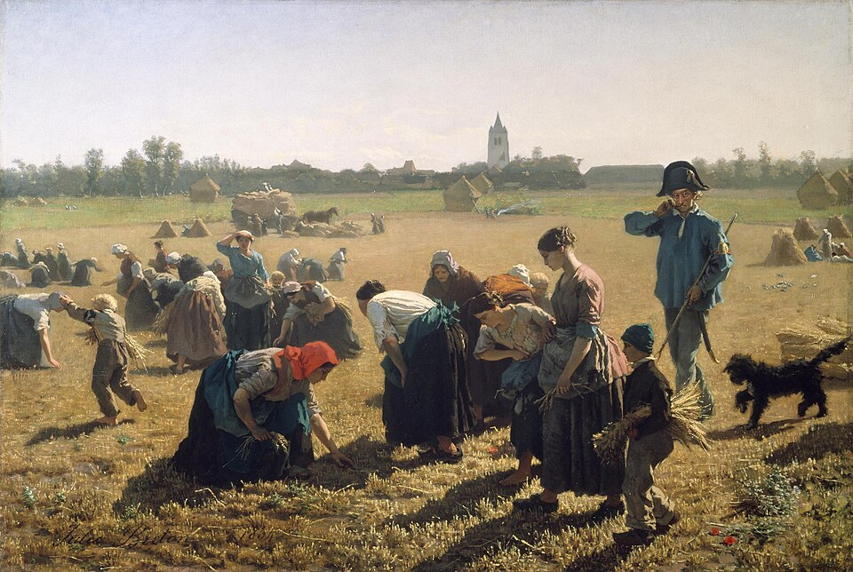
画像を拡大 ＋《落穂拾い》
- 作者
- ジュール・ブルトン
- 制作時期
- 1854年
- 所在地・所蔵
- アイルランド国立美術館、ダブリン（NGI.4213）
- 素材・形式
- 油彩画
出典・画像について
1860年代と近代絵画へ
1860年代の自由化
動画 27:21～1860年代には変化が起きます。ナポレオン3世は、国外への影響力拡大を狙ったメキシコ出兵の失敗で威信を損ないました。イギリスとの自由貿易協定で工業製品が流入し、国内の資本家も反発します。支持を得るため、従来の権威主義を和らげ、言論や集会、美術にもある程度の自由を認めるようになりました。
批判的な勢力も発言の機会を取り戻し、ドーミエは代表作を多く描きました。《三等列車》は貧しい人々が狭い座席を共有する姿、《洗濯女》は裕福な人々の服を洗う仕事の女性を描き、貧富の差を浮かび上がらせます。ミレーもフランスとアメリカで評価され、サロンで多くの作品が認められました。1867年のパリ万国博覧会では一室を与えられ、それまでの苦労が報われました。
 画像を拡大 ＋
画像を拡大 ＋
《三等客車（三等列車）》
- 作者
- オノレ・ドーミエ
- 制作時期
- 1862～1864年頃
- 所在地・所蔵
- メトロポリタン美術館、ニューヨーク（29.100.129）
- 素材・形式
- 油彩画
出典・画像について
メトロポリタン美術館の未完成版です。人物の姿勢が異なるオタワの完成版とは区別しています。
画像出典：The Metropolitan Museum of Art, New York
CC0 1.0
作品情報：作品・画像・利用条件

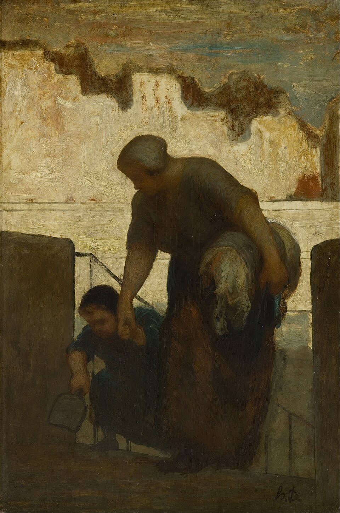
画像を拡大 ＋《洗濯女》
- 作者
- オノレ・ドーミエ
- 制作時期
- 1863年頃
- 所在地・所蔵
- オルセー美術館（RF 2630）
- 素材・形式
- 油彩・板
出典・画像について
自己表現の広がりと落選展
動画 28:37～クールベは1860年代に女性の裸体を多く描き、現実の身体だけでなく、女性同士の性愛など当時のタブーも扱い続けました。他の画家も独自の美を表現するようになります。ウジェーヌ・ブーダンは身近な自然から受けた感動を直接カンヴァスに収め、アンリ・ファンタン＝ラトゥールは、亡くなったドラクロワの肖像の前で画家の決意を示す集団肖像画を描きました。

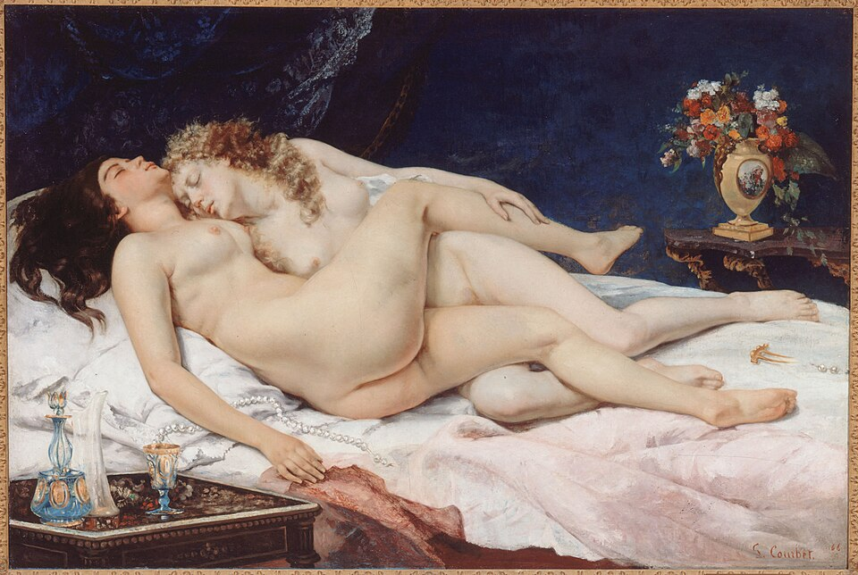
画像を拡大 ＋《眠り》
- 作者
- ギュスターヴ・クールベ
- 制作時期
- 1866年
- 所在地・所蔵
- プティ・パレ、パリ市立美術館（PPP3130）
- 素材・形式
- 油彩画
出典・画像について
候補は港と舟で別作品。動画の右赤白建物・旗・人物に合う個体・所蔵・利用条件を確定できず保留。Minneapolis15.30も別なので代用しない。
《トルーヴィルの海岸（個体未確定）》
- 作者
- ウジェーヌ・ブーダン
- 制作時期
- 1864年（動画表示）
- 所在地・所蔵
- 未確定
- 素材・形式
- 油彩画
出典・画像について
動画の右赤白建物・旗・人物に合う個体・所蔵・利用条件を確定できず保留。Minneapolis15.30も別なので代用しない。
制作メモ
候補は港と舟で別作品。

《ドラクロワへのオマージュ》
- 作者
- アンリ・ファンタン＝ラトゥール
- 制作時期
- 1864年
- 所在地・所蔵
- オルセー美術館（RF 1664）
- 素材・形式
- 油彩画
出典・画像について
1860年代の大きな出来事が、サロンで落選した画家のための落選展です。私的な展示は以前もありましたが、1863年には落選した芸術家の反発が大きく、政府が開催を支援しました。そこに《草上の昼食》という物議を醸す作品が登場します。この絵が美術史を変え、近代絵画の土台を作っていきました。

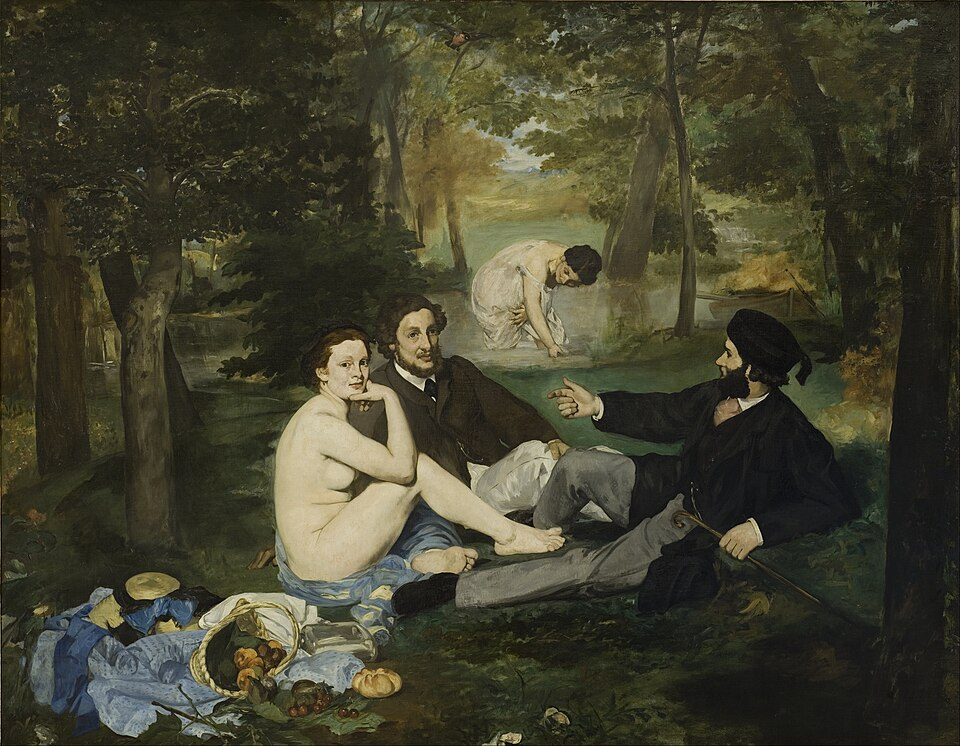
画像を拡大 ＋《草上の昼食》
- 作者
- エドゥアール・マネ
- 制作時期
- 1863年
- 所在地・所蔵
- オルセー美術館（RF 1668）
- 素材・形式
- 油彩画
出典・画像について
要点まとめ
- 写実主義（レアリスム）は19世紀半ばのフランスに現れ、印象主義や象徴主義に影響した。現実らしい描写ではなく、空想や理想化を排して現実そのものを描こうとし、新古典主義の理想やロマン主義の劇的な世界も否定した。背景には市民革命と産業革命がある。
- 1830年の七月革命後の七月王政では、折衷派とオリエンタリズムが裕福な市民に好まれた。一方、産業革命で都市に流入した労働者は劣悪な環境に置かれ、社会主義思想が広がった。
- 1848年の二月革命で第二共和政が成立し、同年のサロンは審査なしで全作品を入選とした。ミレーの《箕をふるう人》が政府に購入され、農民画にも評価が与えられた。
- 大統領ルイ＝ナポレオンのもとの1850年のサロンで、クールベの《オルナンの埋葬》とミレーの《種まく人》が、社会主義を勢い付けるとして危険視された。
- クールベは故郷オルナンを愛し、《石割人夫》で労働者を見たまま淡々と描いた。《オルナンの埋葬》では、宗教や歴史の場面に限られていた大画面に地元の普通の葬儀を描いた。ボードレールの影響が大きいともいわれる。
- ミレーは裸婦画をやめて農民画に進み、1849年にバルビゾンへ移ってテオドール・ルソーと親交を結んだ。《種まく人》には聖書の「種まく人のたとえ」が重ねられている。
- 風刺画家ドーミエは政治を明確に風刺した。共和国の寓意や《待合室》《三等列車》《洗濯女》で貧富の差を浮かび上がらせた。
- 1852年にナポレオン3世の第二帝政が始まり、オスマンによるパリ大改造が進む一方、美術にも規制がかかった。1855年の万国博覧会で作品を拒否されたクールベは、自ら小屋を建てて個展を開き、「レアリスム宣言」を配った。《画家のアトリエ》は自作の寓意を散りばめた作品である。
- 1857年にミレーの《落穂拾い》は社会不安をあおると批判されたが、1860年代の自由化のなかでミレーやドーミエは評価を得た。1863年には落選展が開かれ、《草上の昼食》が近代絵画の土台を作っていく。
確認問題
答えを考えてから開いてください。選択問題は選ぶとすぐ正誤と解説が出ます（選択肢の順番は開くたびに変わります）。各問題のリンクから該当の章や作品カードへ戻れます。
選択問題：0／5問回答・正解0
A. 一問一答答えを考えてから開く
問11855年、万国博覧会で作品の展示を拒否されたクールベが、会場近くに建てた小屋の個展で来場者に配った小冊子を何と呼ぶか。
答えを見る
問21848年のサロンで政府に購入され、ミレーが農民を描く道へ進むきっかけとなった作品は何か。
答えを見る
問3収穫時に取り切れなかった穂を、貧しい農婦が拾ってよいとする慣習を何と呼ぶか。
答えを見る
B. 4択選ぶとすぐ正誤と解説
問4現代生活固有の美を、歴史画に匹敵する大画面で表すことを美術の課題とし、クールベの主題選びに影響したとされる詩人・美術評論家は誰か。
→ 本文で確認（見たままを描いたクールベ）
問5ナポレオン3世の命で、現在のパリの原型となる大改造を進めたセーヌ県知事は誰か。
→ 本文で確認（第二帝政と美術の規制）
問6クールベの《オルナンの埋葬》の新しさとして正しいものはどれか。
→ 本文で確認（見たままを描いたクールベ）
C. 図版問題画像を見て答える
問7この作品の名前と作者を答えよ。
答えを見る
問8この作品の名前はどれか。
→ 作品カードで確認
問9この作品の作者は誰か。
→ 作品カードで確認